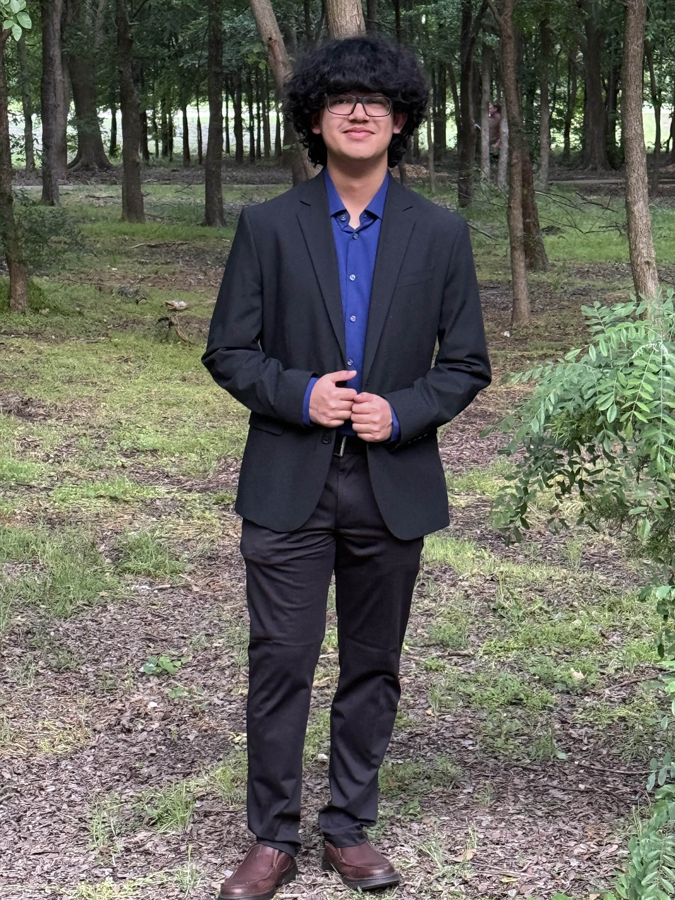
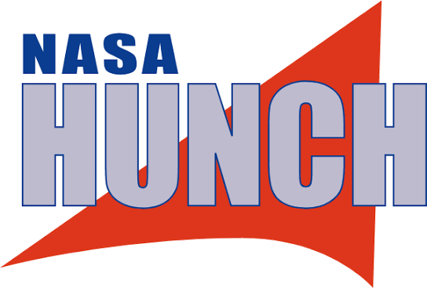
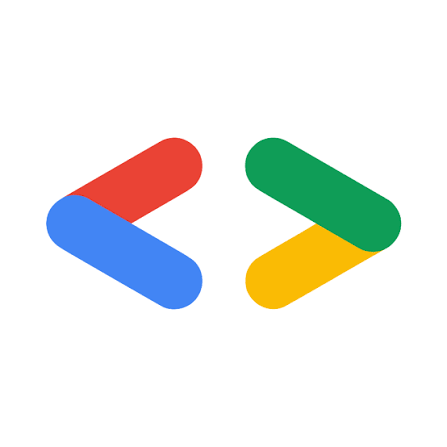
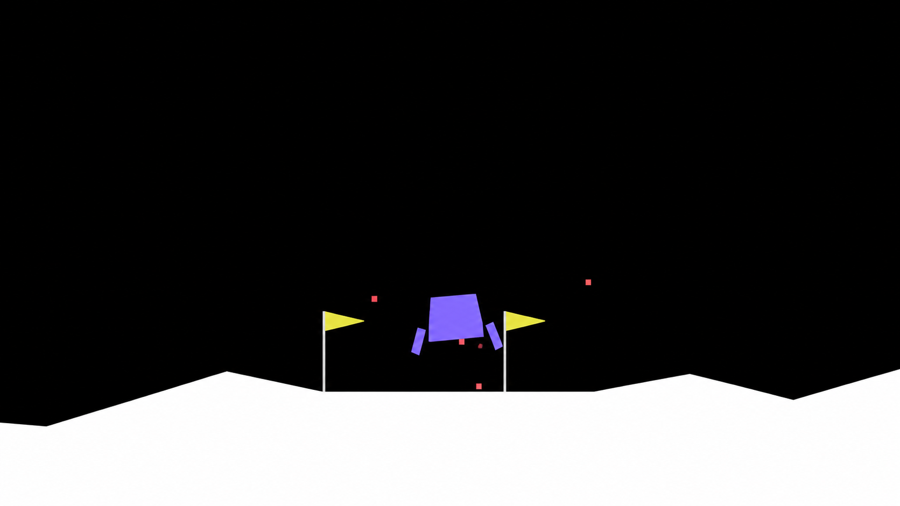
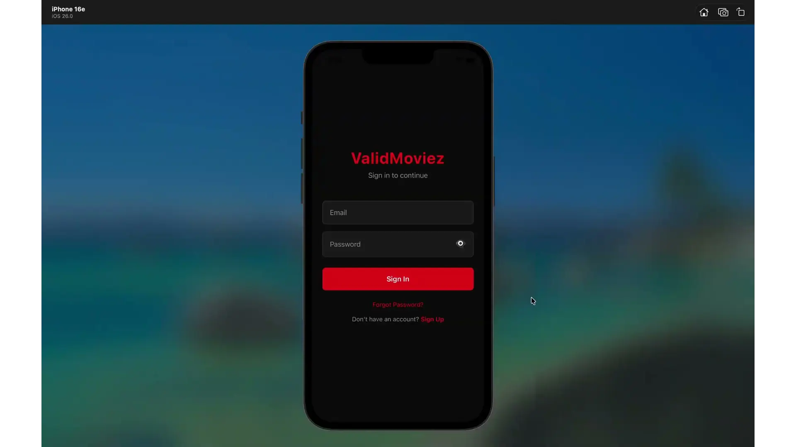
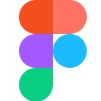

ENVIRONMENTAL SENSOR SUBSYSTEM
ENVIRONMENTAL SENSOR SUBSYSTEMEnvironmental Sensor Subsystem
November 2023 – April 2024
Built the front-end interface for a four-person environmental sensor project and refined it through NASA HUNCH competition rounds.
National Software Finalist
I’m a Computer Science student at UT Dallas building full-stack, mobile, and AI/ML applications, with a focus on software engineering internships.


NOVEMBER 2023 – APRIL 2024Software Developer — Front End & UI Design
Developed the front-end interface for an environmental sensor subsystem with a four-person team, refining the UI through NASA HUNCH competition rounds and earning National Software Finalist recognition.
Explore the project
JAN 2026 – MAY 2026Software Developer
Trained and evaluated a reinforcement-learning agent across 2,000 episodes, tracking rewards and model checkpoints to measure learning progress.
Explore the projectENVIRONMENTAL SENSOR SUBSYSTEMNovember 2023 – April 2024
Built the front-end interface for a four-person environmental sensor project and refined it through NASA HUNCH competition rounds.
National Software Finalist

LUNAR LANDERMarch 2026 – May 2026
Tracked reward trends and saved model checkpoints to evaluate a reinforcement-learning agent’s progress.
2,000 training episodes analyzed

VALIDMOVIEZAugust 2025 – December 2025
Built mobile login and home screens, connected Firebase services, and handled recommendation API responses and errors.
Firebase authentication + recommendation API

FigmaWhile studying Computer Science at UT Dallas, I enjoy taking ideas from concept to working software. I like building across the full development lifecycle and improving projects through real feedback.
Built Lunar Lander.
Project details ↗I’m looking for software engineering internship opportunities and would love to connect.